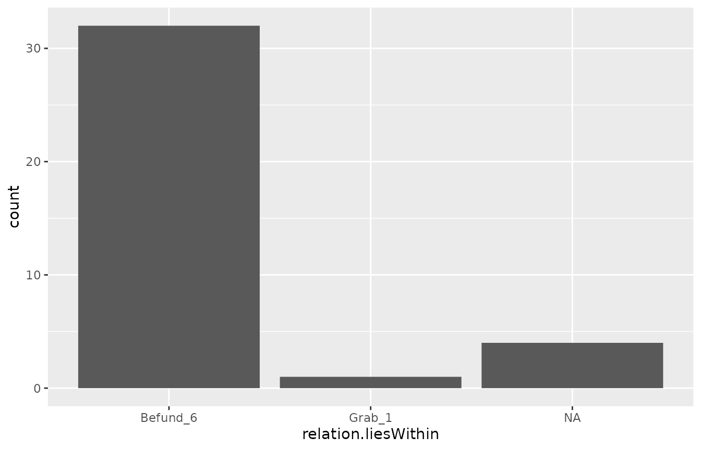
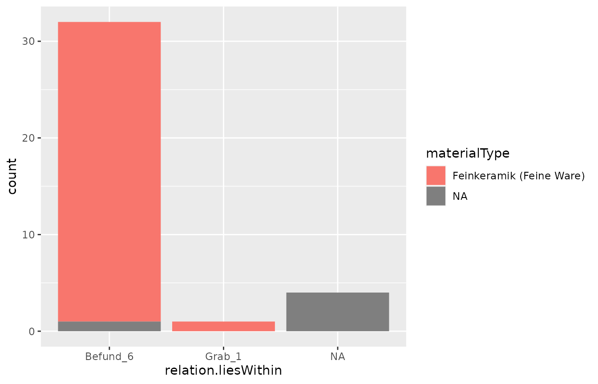

The package includes test data as an RDS file in
inst/testdata, for the purpose of building this vignette. A
backup with the same data that can be imported in iDAI.field 2 / Field
Desktop is included as well, for reference. Since it is impossible to
use the actual database connection when building this vignette, data is
loaded from this file, but corresponds to what can be obtained with the
get_idaifield_docs() function.
When importing data your first step would be to build a connection object, where serverip corresponds to the IP listed in the Field Client as “Eigene Adresse” when using the client in a network, user can be anything you wish and will only be important if you intend to write to the database, as the client does not employ user-specific passwords. pwd should be the password as listed in the Field Client. If you run the Client on the same computer as you R-Script, you can use the localhost address (127.0.0.1).
connection <- connect_idaifield(serverip = "127.0.0.1",
user = "R",
pwd = "hallo")Note: The default options are set for Field Desktop
(iDAI.field 3). If you continue to use iDAI.field 2, you need to add the
version number to connect_idaifield(), otherwise the
connection cannot be established!
connection <- connect_idaifield(serverip = "127.0.0.1",
user = "R",
pwd = "hallo",
version = 2)Sofa can help you get a list of all the projects that are stored in the database:
sofa::db_list(connection)Getting your DB-Entries into R
The project database you are using can either be imported in total
(see below), or queried. The functions demonstrated here are wrapping
the queries possible with sofa in other functions as to
make it more accessible to people using iDAI.field 2 / Field Desktop. If
you want more complex queries, I suggest to use sofa directly.
For almost any function of this package, you will need a “uidlist”. It serves as an index to the database and as a way of replacing UIDs with their respective identifiers for readability. You can obtain this uidlist / the index as follows:
all_resources <- get_idaifield_docs(
connection = connection,
projectname = "rtest",
raw = FALSE
)
uidlist <- get_uid_list(all_resources)With the idf_query()-function, you can then query the
database with some of the fields and variables. This will not work for
everything: e.g. relations cannot be queried in this way.
layers <- idf_query(connection = connection,
uidlist = uidlist,
project = "rtest",
field = "type",
value = "Layer")Another example, this time querying for “Farbe” in the radioButton field “distinguishingCriteria”:
layers <- idf_query(connection = connection,
uidlist = uidlist,
project = "rtest",
field = "distinguishingCriteria",
value = "Farbe")However, these queries will only work for fields that cannot have more than one value (i.e. radio Buttons, Dropdown lists, names). With Sofa, searching for Regular Expressions etc. is possible. If you intend to do that, I would recommend to use sofa directly.
Working with the data
The lists as they are usually returned by the database are not always
very useful or easy to work with. The functions
simplify_idaifield() aims to alleviate this somewhat by
replacing all UIDs with identifiers, reformating the coordinates to make
them usable, and spread columns from multiple choice fields. As the
processing takes some time, I do not recommend using this function on
the whole database if you have a large amount of resources. Instead, try
using it on the results of queries or a selection of the database
obtained with select_by().
pottery <- select_by(all_resources, by = "type", value = "Pottery")
pottery <- simplify_idaifield(pottery, uidlist = uidlist)
#> No Configuration found!
head(idaifield_as_matrix(pottery))
#> identifier type shortDescription processor
#> [1,] "Befund_6_KER_4" "Pottery" NA "Anna Allgemeinperson"
#> [2,] "Befund_6_KER_18" "Pottery" NA "Anna Allgemeinperson"
#> [3,] "KER_1" "Pottery" NA "Anna Allgemeinperson"
#> [4,] "Befund_6_KER_1" "Pottery" NA "Anna Allgemeinperson"
#> [5,] "Befund_6_KER_8" "Pottery" NA "Anna Allgemeinperson"
#> [6,] "Befund_6_KER_6" "Pottery" NA "Anna Allgemeinperson"
#> campaign relation.isRecordedIn amount amountSherdsBase amountSherdsHandles
#> [1,] "2021" "Schnitt 1" "1" "2" "2"
#> [2,] "2021" "Schnitt 1" "2" "2" "3"
#> [3,] "2021" "Schnitt 1" "1" "2" "2"
#> [4,] NA "Schnitt 1" NA NA NA
#> [5,] "2021" "Schnitt 1" "1" "9" "2"
#> [6,] "2021" "Schnitt 1" "1" "2" "3"
#> amountSherdsLid amountSherdsLip amountSherdsOther amountSherdsPedestal
#> [1,] NA NA NA NA
#> [2,] NA NA NA NA
#> [3,] "0" "0" "23" "1"
#> [4,] NA NA NA NA
#> [5,] NA NA NA NA
#> [6,] NA NA NA NA
#> amountSherdsPercent amountSherdsRim amountSherdsRimBase
#> [1,] NA "4" NA
#> [2,] NA "4" NA
#> [3,] "100" "3" "1"
#> [4,] NA NA NA
#> [5,] NA "4" NA
#> [6,] NA "4" NA
#> amountSherdsRimShoulder amountSherdsShoulder amountSherdsWall
#> [1,] NA NA "7"
#> [2,] NA NA "2"
#> [3,] "1" "2" "5"
#> [4,] NA NA NA
#> [5,] NA NA "6"
#> [6,] NA NA "2"
#> catalogueNumber clayColorBreak clayColorInside clayColorOutside
#> [1,] NA NA NA NA
#> [2,] NA NA NA NA
#> [3,] "1" "beige; blass-" "beige; blass-" "beige; blass-"
#> [4,] NA NA NA NA
#> [5,] NA NA NA NA
#> [6,] NA NA NA NA
#> clayHardness coatColorInside coatColorOutside coatInside
#> [1,] NA "schwarz" "schwarz" "Schwarzfirnis"
#> [2,] NA "schwarz" "schwarz" "Schwarzfirnis"
#> [3,] "4 (Messerspitze ritzt)" "schwarz" "schwarz" "Schwarzfirnis"
#> [4,] NA NA NA NA
#> [5,] NA "schwarz" "schwarz" "Schwarzfirnis"
#> [6,] NA "schwarz" "schwarz" "Schwarzfirnis"
#> coatInsideType coatOutside coatOutsideType condition conditionAmount
#> [1,] "Überzug" "Schwarzfirnis" "Überzug" "sehr gut" "Vollständig"
#> [2,] "Überzug" "Schwarzfirnis" "Überzug" "mittel" "Fragmentarisch"
#> [3,] "Überzug" "Schwarzfirnis" "Überzug" "sehr gut" "Vollständig"
#> [4,] NA NA NA "mittel" "Fragmentarisch"
#> [5,] "Überzug" "Schwarzfirnis" "Überzug" "sehr gut" "Vollständig"
#> [6,] "Überzug" "Schwarzfirnis" "Überzug" "sehr gut" "Vollständig"
#> conditionPercent date decorationTechnique
#> [1,] "100" NA NA
#> [2,] "50" NA NA
#> [3,] "100" "27.05.2022" "Bemalung"
#> [4,] NA NA NA
#> [5,] "100" NA NA
#> [6,] "100" NA NA
#> geometry hasCoat hasRestoration
#> [1,] NA NA "TRUE"
#> [2,] NA NA "FALSE"
#> [3,] "Point; 524301.142232103; 4153818.54610038; 0" "TRUE" "TRUE"
#> [4,] NA NA NA
#> [5,] NA NA "TRUE"
#> [6,] NA NA "TRUE"
#> id
#> [1,] "0569d787-aa67-e105-3a27-cba29012e78e"
#> [2,] "0860b5a5-4602-9feb-fabb-85610298bd93"
#> [3,] "10a8e1ae-bf1d-5324-5b98-f25a65b94229"
#> [4,] "1fe8a278-45db-bdf1-0d91-16e7c805401b"
#> [5,] "3097f135-4f6b-10db-b8c5-e14e69d75127"
#> [6,] "32144146-fcf5-d2a7-2011-faf1008dc991"
#> manufacturing
#> [1,] NA
#> [2,] NA
#> [3,] "Dickwandig; Sekundär gebrannt; Gebrannt; Oberfläche glatt"
#> [4,] NA
#> [5,] NA
#> [6,] NA
#> manufacturingMethod materialType objectType
#> [1,] NA "Feinkeramik (Feine Ware)" "Gefäß"
#> [2,] NA "Feinkeramik (Feine Ware)" "Gefäß"
#> [3,] "gedreht (auf Drehscheibe)" "Feinkeramik (Feine Ware)" "Gefäß"
#> [4,] NA NA NA
#> [5,] NA "Feinkeramik (Feine Ware)" "Gefäß"
#> [6,] NA "Feinkeramik (Feine Ware)" "Gefäß"
#> period period.end period.start provenance relation.liesWithin
#> [1,] "Klassisch" "Klassisch" "Klassisch" "Attisch" "Befund_6"
#> [2,] "Klassisch" "Klassisch" "Klassisch" "Attisch" "Befund_6"
#> [3,] "Klassisch" "Klassisch" "Klassisch" "Attisch" "Grab_1"
#> [4,] NA NA NA NA "Befund_6"
#> [5,] "Klassisch" "Klassisch" "Klassisch" "Attisch" "Befund_6"
#> [6,] "Klassisch" "Klassisch" "Klassisch" "Attisch" "Befund_6"
#> relation.liesWithinLayer specificType storagePlace
#> [1,] "Befund_6" "Attische Rotfigurige Keramik" "Museum"
#> [2,] "Befund_6" "Attische Rotfigurige Keramik" "Museum"
#> [3,] "Grab_1" "Attische Rotfigurige Keramik" "Museum"
#> [4,] "Befund_6" "Attische Schwarzglanzton Ware" NA
#> [5,] "Befund_6" "Attische Rotfigurige Keramik" "Museum"
#> [6,] "Befund_6" "Attische Rotfigurige Keramik" "Museum"
#> temper temperAmount temperParticles vesselForm
#> [1,] NA NA NA "Amphore"
#> [2,] NA NA NA "Schale"
#> [3,] "Kalk; Glimmer; Sonstige" "Nicht erkennbar" "fein" "Amphore"
#> [4,] NA NA NA NA
#> [5,] NA NA NA "Kanne"
#> [6,] NA NA NA "Amphore"
#> weight
#> [1,] "343"
#> [2,] "48"
#> [3,] "12"
#> [4,] NA
#> [5,] "56"
#> [6,] "31"The Inefficient Way (deprecated functions)
The following explanations and functions will no longer be used after a complete re-structuring of this package. However, I am leaving them here as to not ruin the day of any person that may have used this at some point.
And get_idaifield_docs() imports all documents from the
project. simplified = TRUE (which is the default) returns a
list that is already unnested to resource level. With simplified = FALSE
it is possible to obtain all the meta-info on each resource, i.e. the
changelog of each resource.
idaifield_test_resources <- get_idaifield_docs(
connection = connection,
projectname = "rtest",
raw = FALSE
)This returns an object of class “idaifield_resources”, which is a nested list:
idaifield_test_resources[[1]]
#> $identifier
#> [1] "Befund_6"
#>
#> $processor
#> $processor[[1]]
#> [1] "Henriëtte Sönderßeichen"
#>
#>
#> $campaign
#> $campaign[[1]]
#> [1] "2021"
#>
#>
#> $id
#> [1] "02932bc4-22ce-3080-a205-e050b489c0c2"
#>
#> $type
#> [1] "Layer"
#>
#> $relation.isRecordedIn
#> [1] "Schnitt 1"
#>
#> $relation.liesWithin
#> [1] "SE02"
#>
#> $relation.liesWithinLayer
#> [1] NAFor any further processing and especially larger data sets, the
select_by() function should be important:
layers <- select_by(idaifield_test_resources, by = "type", value = "Layer")
layers[[5]]
#> $geometry
#> $geometry$type
#> [1] "Polygon"
#>
#> $geometry$coordinates
#> $geometry$coordinates[[1]]
#> [,1] [,2] [,3]
#> [1,] 524300.5 4153818 0
#> [2,] 524302.0 4153818 0
#> [3,] 524302.0 4153820 0
#> [4,] 524300.5 4153820 0
#>
#>
#>
#> $identifier
#> [1] "Befund_1"
#>
#> $id
#> [1] "b6014881-d8b7-2bb6-b5df-73245374e791"
#>
#> $shortDescription
#> [1] "Oberfläche"
#>
#> $processor
#> $processor[[1]]
#> [1] "Max Mustermann"
#>
#>
#> $campaign
#> $campaign[[1]]
#> [1] "2021"
#>
#>
#> $period
#> $period$value
#> [1] "Frühkaiserzeitlich"
#>
#>
#> $type
#> [1] "Layer"
#>
#> $relation.isAbove
#> [1] "Befund_2" "Befund_4" "Grab_1"
#>
#> $relation.isRecordedIn
#> [1] "Schnitt 1"
#>
#> $relation.liesWithin
#> [1] "SE01"
#>
#> $relation.liesWithinLayer
#> [1] NA
#>
#> $period.start
#> [1] "Frühkaiserzeitlich"
#>
#> $period.end
#> [1] "Frühkaiserzeitlich"A list of all resource-types present in the database can be gathered
with show_type_list(). Only the internal names are
referenced as types, and translations that you may see in the GUI can be
different from these. They can be gathered in the Field Client from
“Hilfe > Formularkonfiguration” (pink names in upper right
corner).
show_type_list(idaifield_test_resources)
#> [1] "Layer" "Survey" "Bone" "Pottery"
#> [5] "Mollusk" "Trench" "PlasterFragment" "Terracotta"
#> [9] "Coin" "Stone" "Feature" "Metal"
#> [13] "Testformular" "Wood" "Brick" "Place"
#> [17] "Configuration" "Inscription" "Grave" "Glass"
#> [21] "Project"A selection of the whole list can be converted into a matrix of lists:
pottery <- idaifield_test_resources %>%
select_by(by = "type", value = "Pottery") %>%
idaifield_as_matrix()
pottery[1:5, 1:5]
#> identifier type shortDescription processor
#> [1,] "Befund_6_KER_4" "Pottery" NA "Anna Allgemeinperson"
#> [2,] "Befund_6_KER_18" "Pottery" NA "Anna Allgemeinperson"
#> [3,] "KER_1" "Pottery" NA "Anna Allgemeinperson"
#> [4,] "Befund_6_KER_1" "Pottery" NA "Anna Allgemeinperson"
#> [5,] "Befund_6_KER_8" "Pottery" NA "Anna Allgemeinperson"
#> campaign
#> [1,] "2021"
#> [2,] "2021"
#> [3,] "2021"
#> [4,] NA
#> [5,] "2021"(There is a function for data.frame conversion which pastes all entries from fields with multiple entries together, but I do not recommend it and frankly it might not even work anymore, as I have changes many things.)
With this matrix, it is easy to plot any distributions or actually further select and analyse the data. The matric can be coerced to a data.frame that will be easier for handling plotting functions.
library(dplyr)
pottery_df <- pottery %>%
as.data.frame() %>%
mutate_all(~ as.character(.))
head(pottery_df[, c(1, 25:29)])| identifier | coatColorInside | coatColorOutside | coatInside | coatInsideType | coatOutside |
|---|---|---|---|---|---|
| Befund_6_KER_4 | schwarz | schwarz | Schwarzfirnis | Überzug | Schwarzfirnis |
| Befund_6_KER_18 | schwarz | schwarz | Schwarzfirnis | Überzug | Schwarzfirnis |
| KER_1 | schwarz | schwarz | Schwarzfirnis | Überzug | Schwarzfirnis |
| Befund_6_KER_1 | NA | NA | NA | NA | NA |
| Befund_6_KER_8 | schwarz | schwarz | Schwarzfirnis | Überzug | Schwarzfirnis |
| Befund_6_KER_6 | schwarz | schwarz | Schwarzfirnis | Überzug | Schwarzfirnis |
And from the resulting data.frame, plotting with ggplot works without complications:
 Though it may be required to reformat columns from list to character or factor:

Notes
If you are planing on using the coordinates from the geometry in iDAI.field 2 / Field Desktop, I strongly suggest you modify your digit length in R before importing. Depending on the projection used in the database, the import might omit some digits or or round numbers.
Example:
options(digits = 20)Geometry
As a comment: simplify_idaifield() or
get_idaifield_docs(..., simplified = TRUE) by default
reformats the geometry entries so that the coordinates are stored in a
matrix. This can be reformatted with the sp-package to
display in R-leaflet maps etc. (You will still need to add the CRS.) The
geometry-matrix has 3 columns for x, y and z values. If there are only
two-dimensional data in the database, height will be set to 0.
Alternatives
In case you wish to work with the whole database in json-format, I suggest you use the jsonlite package which has similar capabilities to e.g. flatten any lists and output. You can get the whole database in json format via:
connection <- connect_idaifield(serverip = "127.0.0.1",
user = "R",
pwd = "hallo")
json_output <- get_idaifield_docs(projectname = "rtest",
connection = connection,
json = TRUE)
library(jsonlite)
nested_df <- fromJSON(json_output)$rows
flattened_df <- flatten(nested_df)Since I prepared this package mostly to suit my own need you might be happier with this output. Most functions from this package however will probably not work with the flattened/converted json-outputs, but it should not be hard to find replace the UIDs etc, for which some internal functions in this package may still be useful.
Other Notes
Since version 3 (Field Desktop / iDAI.field 3) the Configuration itself can be extracted from the database. You can possibly use this to incorporate translations into plots, though I have yet to figure out a way how.
This will return a matrix with nested lists representing the whole project configuration:
config <- get_idaifield_docs(connection = connection,
projectname = "rtest") %>%
select_by(by = "type", value = "Configuration")